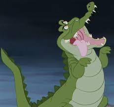
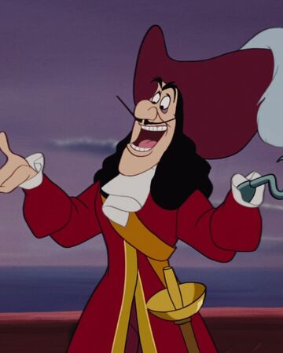

КАПИТАН КРЮК
Внешность
Капитан Крюк носит красивый красный сюртук, красные штаны и чёрные туфли. На месте левой руки у него крюк. Образ капитана дополняет широкополая шляпа. У Крюка густые чёрные волосы и тонкие усики

Характер
Капитан Крюк — грозный и хитрый негодяй. Однако он часто выставляет себя дураком, но, несмотря на это, он довольно кровожаден. Например, в оригинальном мультфильме он насмерть застрелил одного из своих пиратов из-за его пения, а позднее в злости выбросил другого пирата за борт при помощи одного своего крюка. Крюк очень умён и хорошо умеет манипулировать другими. Он сумел уговорить Динь-Динь показать убежище Питера, а Зарину - сделать для него пыльцу для полёта. Крюк не отличается и благородством - так, он опускает Питеру бомбу, мотивирую это тем, что он поклялся не трогать его... Крюк очень боится крокодила Тик-Така (а позже осьминога) - при его появлении Крюк впадает в панику.

Появления
Питер Пэн
Показан размышляющим , где найти убежище Питера. Он уже обыскал уже всё что мог. Он даже попадает на территорию индейцев. Тут ему приходит идея - заставить индейцев помочь ему, т. к. они великолепно знают остров. Но тут появляется Сми, чтобы побрить капитана. Когда Крюк уже готов, он слышит тиканье. Но Смит прогоняет крокодила и бреет случайно севшую на капитана чайку.
Возвращение в Нетландию
Джейк и пираты Нетландии Является основным антагонистом сериала. Всячески мешает Джейку и его друзьям, часто считая, что они ищут сокровища. Считает себя величайшим капитаном в Нетландии. Постоянно обращается в приказном тоне. Однако часто вынужден сотрудничать, либо из корысти, либо по требованию своей мамы.
Феи: Загадка пиратского острова
Здесь он изображён достаточно молодым и носящим простую одежду. Первоначально он является помощником Зарины.
Камео
Вместе с другими злодеями в "Доме злодеев" участвовал в заговоре по завоеванию клуба.
Капитан Крюк убил маму Ариэль
Одна из русалок, подруга Питера Пэна, сильно напоминает Афину, мать Ариэль: те же огненно-рыжие волосы и изумрудный хвост. Больше всего русалки из «Питера Пэна» боялись Капитана Крюка. Во втором мультфильме о русалочке мы узнаем, что Афина была убита злым пиратом. Все это позволяет предполагать, что Капитан Крюк убил маму Ариэль.